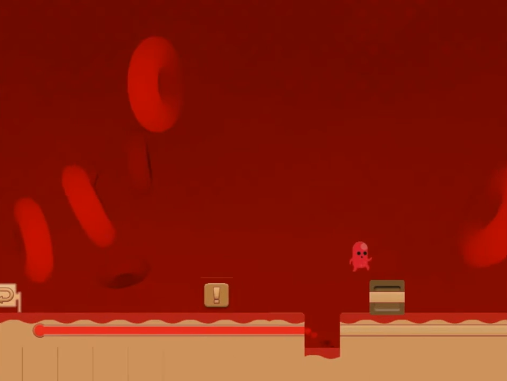
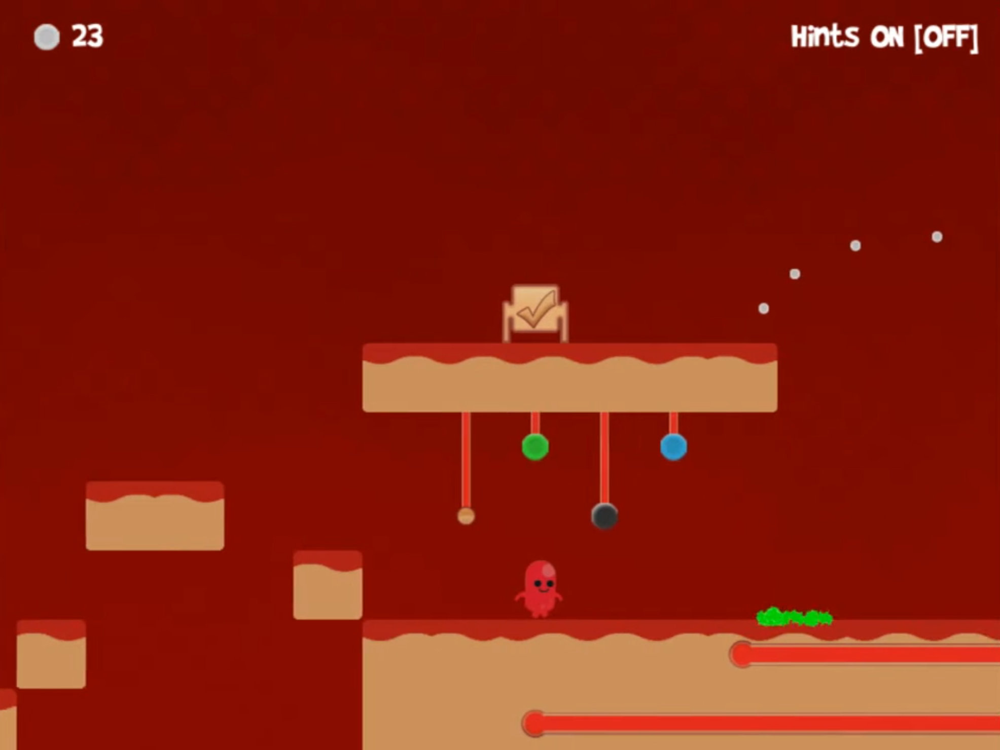

Early tutorial language
Level 1 introduced interaction prompts, movement timing, and signposting. It worked for isolated actions, but it did not yet prepare players to chain ideas together when the answer was less obvious.
UX case study
A UX case study about making a puzzle tutorial clearer, kinder, and less annoying without taking the solve away from the player.
Abstract summary
The Grumbler is a small indie 2D puzzle platformer about a hungry stomach monster moving through food, switches, enemies, and exits. Players understood the character and the basic movement quickly, but puzzle 5 was where things started to break down. The game was asking them to connect too many lessons at once, and the tutorial was not doing enough to help them recover when they got stuck.
The most useful change was turning the level exit into a contextual hint portal until the puzzle had actually been solved. Once the right condition was met, that same object became the real exit. It meant players had somewhere obvious to go when they were thinking, "What am I missing?", without throwing a big tutorial pop-up in their face.
"The exit finally felt like it was talking to me instead of judging me for not knowing the trick." Playtest participant, post-redesign session
Problem statement
Players were reaching the fifth puzzle with basic movement knowledge, but they were not confident enough to read the exit, switch state, enemy timing, and hint toggle as one connected system. The puzzle itself was not the real problem. The issue was that the tutorial did not answer the next obvious question at the point where players became confused.
This puzzle originally appeared as level 3. User analysis showed it was trying to teach too many concepts at once, so I moved it to level 5 and added two puzzle levels before it. Those extra levels slowed the learning curve down and taught the core ideas separately before asking players to combine them.

Level 1 introduced interaction prompts, movement timing, and signposting. It worked for isolated actions, but it did not yet prepare players to chain ideas together when the answer was less obvious.

Puzzle 5 placed the exit above the interaction field. Players could see where they wanted to go, but they did not understand why the exit was not usable yet.
Objectives and goals
Make the exit communicate what was still missing, then reward the player with a clear state change once they had solved the puzzle.
Get more players through puzzle 5 without flattening the logic or making the answer feel handed over.
Use the level objects, UI language, and art constraints that already existed, because this was a small indie game and the fix needed to be realistic.
Process outline
I looked at fail points, abandon points, hint toggles, time on level, repeated deaths, and what players said while they were trying to work it out.
I mapped the concepts puzzle 5 relied on and found where the earlier levels were under-teaching cause and effect.
I tested contextual exit hints, stronger completion feedback, clearer hint language, and earlier foreshadowing.
I compared completion, solve time, hint use, and confidence between the original tutorial and the improved build.
Business challenges
Level 5 was early enough that a bad experience could make players decide the game was unclear before they had seen enough of it.
A big tutorial rebuild, new voiceover, or a pile of new animation work would have been the wrong answer. Reusing the exit object kept the fix focused.
The Grumbler works because it is silly and handmade. The tutorial could not suddenly become a sterile onboarding system that felt like it belonged in another game.
It still needed to feel like a puzzle platformer. The goal was guidance, not auto-solving.
Target audience
The audience for this study was players who were happy to experiment, but only while the game felt fair. The recruited participant group was white Scottish university students, predominantly male, with one female participant. They were close to the audience I expected for the game: curious, game-literate, and very quick to spot when a puzzle felt unclear rather than difficult.
Research type
I used quantitative data to see where progression was failing, then observation and questionnaires to understand why. That distinction mattered. I did not want to make the puzzle easier just because people were failing it. I wanted to know whether the failure was earned.
I tracked completion rate, level duration, retries, deaths, hint toggles, exit interactions before completion, and abandon rate.
Participants kept saying the same kind of thing at the exit. They could see the goal, but they did not know what the game wanted from them before it would let them leave.
The post-level questions focused on fairness, confidence, remembered objective, and whether the exit made sense.
| Research activity | Sample | Signal captured | Finding |
|---|---|---|---|
| Gameplay analytics | Instrumented tutorial sessions across the original and redesigned builds | Completion, time, retries, hint use, exit touches | Completion improved by 40% after contextual exit hints were added. |
| Moderated observation | White Scottish university student participants, predominantly male with one female participant | Think-aloud reactions and visible stuck loops | Players understood the separate mechanics, but the game had not taught them clearly enough how to combine them. |
| Questionnaire | Same Scottish university student participant cohort after puzzle 5 | Confidence, fairness, remembered goal, perceived hint usefulness | Players responded better to help at the point of need than to instructions shown at the start of the level. |
User needs / Features and functionalities
| User need | Feature or functionality | Why it resolves the need | Priority |
|---|---|---|---|
| Know why the exit is blocked | Exit acts as a hint portal until the puzzle state is complete | The place players naturally go when confused becomes the place that helps them. | Highest |
| Recognize when the puzzle is solved | Portal switches from exclamation mark to check-mark exit state | The same object confirms success and invites the player to leave immediately. | High |
| Keep agency | Hints reveal progressive nudges, not the full answer | Players get unstuck without feeling like the game solved the puzzle for them. | High |
| Understand hint controls | Clearer "Hints ON/OFF" copy and first-use feedback | Players understand that hints are available and optional before the puzzle puts pressure on them. | Medium |
| Connect earlier lessons | Level 1 foreshadowing of exit state changes | Players meet the idea in a safer context before they have to use it in a multi-step puzzle. | Medium |
User challenges
Players reached the exit before solving the puzzle and thought the game had failed to respond.
The sequence depended on object state, enemy position, and switch order, but those links were too quiet.
Some players ignored the hint toggle because it felt like a setting, not help that belonged to the current puzzle.
When a plan failed, players repeated the same jump or attack timing instead of questioning the rule.
The difference between "this is your objective" and "this is now usable" needed to be much stronger.
Generic tutorial text would have broken the stomach-world tone. The help needed to feel like it belonged there.
Competitor analysis
| Reference | Competitor feature | Unique feature for The Grumbler | Design takeaway |
|---|---|---|---|
| Portal | Test chambers teach through environmental staging | Hinting lives inside the exit rather than a separate assist menu | Put the help next to the thing the player is already trying to understand. |
| Braid | Small rule changes are introduced through contained puzzle rooms | The exit can introduce the active rule without solving the final interaction | Teach one conceptual shift at a time, then let the player do the work. |
| Limbo | Minimal interface with strong environmental readability | Hints are diegetic, short, and timed to player intent | Only add UI when the level itself cannot carry the message clearly enough. |
| Super Meat Boy | Fast restart loops make failure feel recoverable | The hint portal reduces repeated wrong attempts before frustration builds | If failure is quick, recovery guidance has to be quick as well. |
| FEZ | Progress depends on reading environmental clues and state changes | The portal state change makes the hidden dependency visible at the goal | Make state changes visible enough that players trust what just happened. |
User personas
These personas are grounded in the study context rather than a broad market segment. They represent white Scottish university students, with a mostly male participant group and one female participant.
Personality description: Curious, playful, and quick to try things, but just as quick to lose interest when progress feels random.
Pain points with current problem: Gets frustrated when a playful game suddenly feels like coursework.
"I do not mind failing if I can tell what I learned."
Personality description: Analytical and completion-focused. He is fine with challenge, but not with rules that feel inconsistent.
Pain points with current problem: Treats unclear feedback as a bug and starts losing trust in the level.
"Show me the rule once and I will do the work."
Personality description: Expressive, social, and sensitive to pacing. She enjoys the humour, but only while the game keeps moving.
Pain points with current problem: Dead time during confusion makes the game feel less charming and more arbitrary.
"A hint can still be funny if it arrives in character."
Personality description: Methodical and time-poor. He likes clever mechanics, but not repeating the same unclear section.
Pain points with current problem: Needs quick reorientation after stepping away, otherwise the puzzle loses him.
"Respect my time, but do not remove the puzzle."
Task mapping table
| Task | Environment | Challenges | Emotions | Thoughts | Urgency level | Design opportunity |
|---|---|---|---|---|---|---|
| Enter puzzle 5 and scan the room | Platform area with suspended switches, enemy, and exit marker | Multiple new relationships compete for attention | Curious, cautious | "What does the exit need from me?" | Medium | Use the exit to preview what is still missing. |
| Try first solution path | Ground platform, enemy lane, reachable objects | Player tests dexterity when the blocker is actually puzzle state | Focused, then uncertain | "Maybe I just missed the timing." | High | Surface a contextual hint before repetition becomes frustration. |
| Return to exit while unsolved | Exit marker above the puzzle field | Exit looks like a goal but does not yet behave as one | Confused, slightly annoyed | "Why can I not leave?" | Critical | Make the exit answer the question at the exact point the player asks it. |
| Complete required sequence and leave | Same exit location, now active | Success needs immediate confirmation | Relieved, satisfied | "I solved it. Now get me out." | High | Change icon, colour, sound, and collision together so success is unmissable. |
Decision Matrix
5 Whys analysis graph
This was part of the root cause analysis. I kept asking why the previous answer was happening until the problem stopped being "players are bad at the puzzle" and became "I am trying to teach them too fast."
Users are struggling to complete level 3.
Because they are struggling to solve the puzzle.
Because they are not combining all the information available.
There is too much going on at once, causing cognitive overload.
Because the level is too complex for this stage in the game.
Because I am trying to teach them too fast.
Root cause analysis
Task flows
Designs / Prototypes
I avoided adding another tutorial overlay. Instead, I gave new behaviour to an object players already understood was important.
1
2
1. The exit shows a hint state instead of pretending it is usable. 2. The hint toggle stays visible, but the contextual portal carries the main support.

1 21. The portal changes to its completion state. 2. The resolved enemy state and clear route reinforce that the player solved the level.
If the puzzle condition is false, the portal gives the next useful hint. If the condition is true, it exits the level.
Hints use one action verb, one object clue, and no full solution. The player still has to do the solve.
The icon, sound, collision, and objective text change together so the state cannot be missed.
Index
The improvement worked because it respected what the player was already trying to do. When players went to the exit too early, the game no longer stayed silent. It answered with a small, contextual hint. When players solved the puzzle, that same object transformed into the exit. That simple state change produced the strongest measured result: a 40% increase in players able to complete puzzle 5.
The next step would be to test different hint wording, track repeated portal interactions more closely, and reuse the same "answer the question at the point of need" pattern for later multi-step puzzles.